x <- 10 x
[1] 10
y <- 1:10 y
[1] 1 2 3 4 5 6 7 8 9 10
y <- 2 y
[1] 2
x + y
[1] 12
x^y
[1] 100
z <- "Olá mundo" z
[1] "Olá mundo"
> Numero <- 10 > numero <- 3

Numéricos
valor <- 605 valor
[1] 605
Caracteres
string <- "Ola mundo" string
[1] "Ola mundo"
Lógicos
2<6
[1] TRUE
Números complexos
nc <- 2 + 3i nc
[1] 2+3i